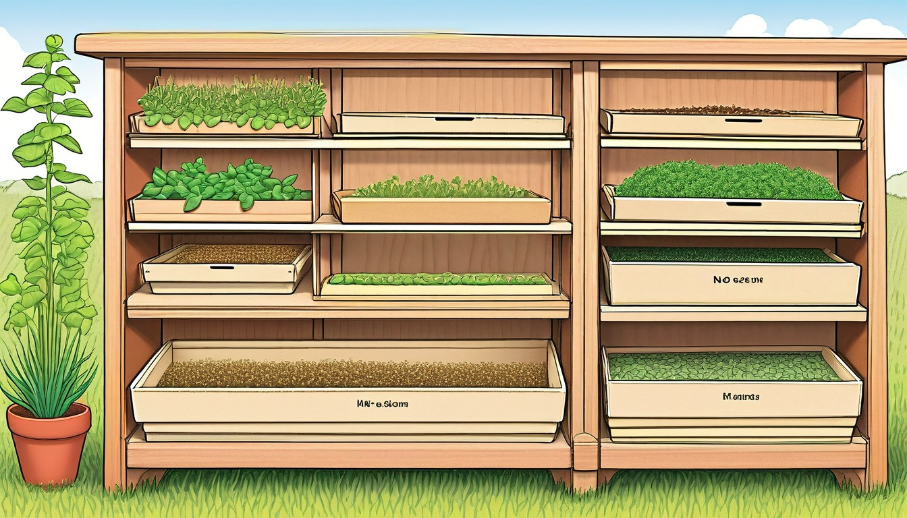

Sixteen paper story switch cards turn pretend pencil-case choices into screen-free story starts.
Audience: Families, homeschool groups, tutors, and adult-led writing tables for writers ages 6-11.
Format: 16 printable story switch cards plus adult guide tools, switch routines, take-home switch slips, and optional share prompts
Family-safe printable writing pages for adult-led, offline story practice.
$35
Included
16 printable pencil-case switch cards
Adult setup guide
Fictional switch-card safety notes
Story switch coaching moves
Privacy and family handoff notes
Pack reset notes
Six adult-led switch routines
Ten take-home switch slips
Eight optional share prompts
Local image-backed world menu
Provider-ready PDF, source HTML, README, manifest, and ZIP artifact
Adult guide
Story switch coaching
Before the session
Print, cut, and stack the story switch cards before the group begins.
Choose 6 to 10 switch cards for the age range and time available.
Place blank paper, pencils, and the switch stack in the center of the table.
Explain that every switch changes a made-up story, not a real event.
Start with one sample sentence so everyone sees how a switch works on paper.
Paper switch setup
Use each card as a paper toggle: read the old choice, then flip to the new choice.
Keep one story draft page beside the switch cards so changes stay visible.
Let the adult leader draw the first switch, then invite writers to choose later switches.
Limit each round to one switch so the story does not become crowded.
Set aside a reset pile for cards that are too hard for the current story.
Story switch coaching
Ask, "What changed on the page?" before asking for more writing.
Treat every switch as an experiment, not a correction.
Invite short answers first: one word, one sentence, then one new detail.
Read the before-and-after lines aloud so writers can hear the change.
When a writer stalls, offer two paper choices and let them point.
Privacy and safety notes
Keep all writing on paper and in the room or folder chosen by the adult.
Use invented names, pretend places, and imaginary pencil case objects.
Skip any card that pulls the story away from make-believe.
Keep examples gentle: funny, curious, surprising, or cozy.
Do not require anyone to read aloud; sharing is always optional.
Family handoff
Send one finished switch card and one blank slip for a short home round.
Tell families the goal is a playful change, not perfect spelling.
Invite families to read the before line and the switched line aloud.
Suggest a 5 to 10 minute pencil case story round.
Keep extra blank slips ready for writers who want another switch.
Reset
Sort cards by switch type after the session.
Recycle damaged slips and reprint only the pages that need replacing.
Return unfinished stories to each writer or the adult folder.
Move any confusing card to the check pile before the next use.
Use one paper switch card at a time. Keep every choice broad, invented, and screen-free.
World menu
Sixteen story-switch-card worlds
Pick a world image, then turn one invented pencil-case choice into a story start.
Ages 6-8
Moon Muffin Market
Ages 6-8
Puddle Planet Post Office
Ages 7-9
Buttonwood Library Train
Ages 7-9
Button Bakery Map Mix-Up
Ages 7-8
Teacup Town Weather Window
Ages 7-9
Pocket Park Notice Board
Ages 7-9
Spoon Ferry Lunchbox Harbor
Ages 7-9
Acorn Avenue Errand Office

Ages 8-10
Seed Library Map Room
Ages 8-10
Rain Gauge Railway
Ages 8-10
Moss Message Observatory
Ages 8-10
Tidepool Timekeepers Lab
Ages 10-11
Revision River Ferry
Ages 10-11
Clue Label Tower Museum
Ages 10-11
Compass Craft Academy
Ages 10-11
Binding Day Boardwalk
Switch routines
Choose the paper switch rhythm
Pencil Case Quick Flip
A 5 to 10 minute warm-up
Write one simple story sentence on paper.
Draw one switch card and read the toggle aloud.
Change only the part named on the card.
Read the old sentence and new sentence back to back.
Two-Switch Story Stretch
Turning a tiny idea into a short scene
Start with a character, setting, and one small problem.
Choose two switch cards from different skills.
Apply the first switch in one sentence.
Apply the second switch in a new sentence and circle the better change.
Mood And Color Toggle
Adding description without long lectures
Pick a plain sentence from the draft.
Draw one mood switch and one color switch.
Add one feeling word and one color detail.
Underline the words that made the scene easier to picture.
Problem Helper Swap
Helping a stuck story move forward
Find the moment where the story stops.
Draw a problem switch and choose a new pretend trouble.
Draw a helper switch and add a gentle helper.
Write the next two sentences using both changes.
Sequence Shuffle
Practicing beginning, middle, and end
Write three short story beats on separate paper strips.
Draw a sequence switch card.
Move one strip to a new spot.
Read the new order and decide what sentence must be added.
Ending Switch Lab
Revising a draft ending
Read the last two sentences of the story.
Draw an ending switch card.
Write a second ending under the first one.
Choose the ending that best fits the story mood.
Take-home switch slips
Finish one story switch later
5 minutes | viewpoint switch
Tiny Narrator Flip
Write one sentence about a pencil case explorer. Now tell the same moment from ____________________.
The viewpoint switch changed the story by ____________________.
5 minutes | object switch
Pocket Object Swap
Circle one object in the story. Swap it for ____________________ and write the sentence again.
The new object made the story feel ____________________.
6 minutes | mood switch
Mood Meter Move
Pick a story sentence. Change the mood to ____________________ and add two matching words.
We noticed the mood switch when ____________________.
5 minutes | color switch
Color Lens Card
Add a color switch to one made-up pencil case item: ____________________.
The color detail helped us picture ____________________.
7 minutes | sequence switch
First Next Last Shuffle
Write three story beats. Move ____________________ to a new spot and read the order aloud.
The sequence switch made the story clearer because ____________________.
6 minutes | problem switch
Problem Button
Give the character a tiny pretend problem: ____________________. Then write the next sentence.
The problem switch gave the story ____________________.
6 minutes | helper switch
Helper From the Case
Add a helpful pencil case object named ____________________ and let it offer one idea.
The helper switch worked because ____________________.
6 minutes | setting switch
New Tiny Setting
Move the story to a pretend place inside the pencil case: ____________________.
The setting switch changed what the character could see: ____________________.
5 minutes | verb switch
Verb Spark
Replace a plain action word with ____________________ and read the sentence aloud.
The verb switch made the action feel ____________________.
7 minutes | ending switch
Ending Toggle
Write a second ending where the final surprise is ____________________.
We chose this ending because ____________________.
Optional share prompts
The switch that changed my story most was ____________________.
Before the switch, my story felt ____________________; after the switch, it felt ____________________.
My made-up pencil case item became ____________________.
The funniest paper toggle was ____________________.
The best helper in my story was ____________________.
One sentence I want to read aloud is ____________________.
The switch I would use again is ____________________.
My next story switch should change ____________________.
Story Switch Card 1 | Ages 6-8 | viewpoint switch
Moon Muffin Market Viewpoint Flip
Moon Muffin Market
Adult setup: Print the card, place two pencils like a paper switch, and name two pretend tellers: a moon muffin sign and a pocket eraser: ____________________.
Circle one teller, write one sentence, then flip the paper switch and tell the same moment another way: ____________________.
Switch front
Front switch: The moon muffin sign says, 'I notice ____________________ first.'
Switch back
Back switch: The pocket eraser says, 'I would gently fix ____________________.'
Story switch
Story switch: Swap the storyteller from sign to eraser, but keep the market moment pretend: ____________________.
First line switch
First line switch: 'At Moon Muffin Market, my pencil case opened and ____________________ began to tell the story.'
Revision nudge
Revision nudge: Add one clue that shows who is talking without naming them: ____________________.
Quiet option
Quiet option: Point to the teller you choose and write only one word clue: ____________________.
Take-home line: Reuse the card to retell a moon market moment from a new pencil-case voice: ____________________.
Story Switch Card 2 | Ages 6-8 | object switch
Puddle Planet Parcel Object Swap
Puddle Planet Post Office
Adult setup: Print the card, draw two paper parcel boxes, and place a pencil cap and paper clip beside the pretend counter: ____________________.
Choose which pencil-case object matters first, then switch it and write what changes in the story: ____________________.
Switch front
Front switch: The pencil cap carries a tiny cloud stamp for ____________________.
Switch back
Back switch: The paper clip carries a folded puddle note about ____________________.
Story switch
Story switch: Swap the object from pencil cap to paper clip, but keep the pretend post office job simple: ____________________.
First line switch
First line switch: 'On Puddle Planet, the post office drawer rattled when ____________________ rolled forward.'
Revision nudge
Revision nudge: Make the chosen object do one clear story job before the ending: ____________________.
Quiet option
Quiet option: Sketch the object and write one label beside it: ____________________.
Take-home line: Take this card home and invent one more pencil-case parcel object: ____________________.
Story Switch Card 3 | Ages 7-9 | sequence switch
Buttonwood Library Train Order Switch
Buttonwood Library Train
Adult setup: Print the card, fold the switch line, and ask the writer to mark three paper train cars A, B, and C: ____________________.
Write three tiny events, then switch the last event to the front and check what feels different: ____________________.
Switch front
Front switch: Car one opens with a buttonwood shelf bell and ____________________.
Switch back
Back switch: The last car goes first, so ____________________ is now the beginning.
Story switch
Story switch: Swap the order of beginning, middle, and ending while keeping the same library train: ____________________.
First line switch
First line switch: 'The Buttonwood Library Train clicked its pencil wheels when ____________________.'
Revision nudge
Revision nudge: Add one time word so the new order is easy to follow: ____________________.
Quiet option
Quiet option: Number the three events silently and rewrite only the new first line: ____________________.
Take-home line: Save the card and try the same order switch with a new library train scene: ____________________.
Story Switch Card 4 | Ages 7-9 | problem switch
Button Bakery Mix-Up Problem Switch
Button Bakery Map Mix-Up
Adult setup: Print the card, set out colored pencils, and draw two simple paper labels for the button counter: ____________________.
Choose one mix-up, write how the helper notices it, then switch to a different mix-up: ____________________.
Switch front
Front switch: The mix-up is a missing button label that should say ____________________.
Switch back
Back switch: The mix-up is a dotted paper line that points to ____________________.
Story switch
Story switch: Swap the problem from missing label to mixed-up color key, and keep every detail fictional: ____________________.
First line switch
First line switch: 'In Button Bakery, the pencil case snapped open when the paper map showed ____________________.'
Revision nudge
Revision nudge: Give the new problem one small clue before anyone solves it: ____________________.
Quiet option
Quiet option: Draw the clue box and write just the changed problem: ____________________.
Take-home line: Use this card to switch one more Button Bakery mix-up on paper: ____________________.
Story Switch Card 5 | Ages 7-8 | mood switch
Teacup Town Mood Window Switch
Teacup Town Weather Window
Adult setup: Print the card, draw one teacup window, and place two pencil color swatches beside it: ____________________.
Pick one mood for the window, write a first line, then switch the mood and revise the same moment: ____________________.
Switch front
Front switch: The weather window feels curious because ____________________.
Switch back
Back switch: The weather window feels patient because ____________________.
Story switch
Story switch: Swap the mood from curious to patient while keeping the same teacup town setting: ____________________.
First line switch
First line switch: 'In Teacup Town, the pencil case clicked shut just as the weather window showed ____________________.'
Revision nudge
Revision nudge: Replace one plain feeling word with a detail the reader can picture: ____________________.
Quiet option
Quiet option: Shade a tiny color square and write one mood clue under it: ____________________.
Take-home line: Try the mood switch again with a new weather-window clue: ____________________.
Story Switch Card 6 | Ages 7-9 | viewpoint switch
Notice Board Narrator Flip
Pocket Park Notice Board
Adult setup: Place a pencil, eraser, and paper clip beside the card. Adult circles the narrator before writing starts: ____________________.
Pick who tells the story, then write what the notice board announces in the tiny park: ____________________.
Switch front
Front switch: Tell it as the stubby pencil who wrote the newest notice: ____________________.
Switch back
Back switch: Tell it as the silver clip holding the wiggly notice still: ____________________.
Story switch
After two sentences, switch to the other narrator and show what they noticed: ____________________.
First line switch
First line: On the pocket-park board, a note appeared that said ____________________.
Revision nudge
Add one sentence where the new narrator spots a detail the first one missed: ____________________.
Quiet option
Quiet option: Point to pencil or clip, then draw one tiny notice before writing: ____________________.
Take-home line: Ask an adult to circle tomorrow's narrator choice on this paper card: ____________________.
Story Switch Card 7 | Ages 7-9 | object switch
Spoon Ferry Cargo Swap
Spoon Ferry Lunchbox Harbor
Adult setup: Set out two pencil-case objects and read both cargo choices aloud. Circle one: ____________________.
Write about the spoon ferry carrying one pencil-case cargo across the paper harbor: ____________________.
Switch front
Front switch: The spoon ferry carries eraser crates tied with a ribbon: ____________________.
Switch back
Back switch: The spoon ferry carries paper-clip anchors in a tiny lid box: ____________________.
Story switch
Halfway through, swap the cargo and explain what changes on the harbor dock: ____________________.
First line switch
First line: At Lunchbox Harbor, the spoon ferry rang its pencil bell for ____________________.
Revision nudge
Add one new sound, shape, or silly dock rule caused by the cargo swap: ____________________.
Quiet option
Quiet option: Draw the ferry cargo first, then label it with one word: ____________________.
Take-home line: At home, retell the harbor trip with a new pencil-case cargo: ____________________.
Story Switch Card 8 | Ages 7-9 | mood switch
Acorn Avenue Mood Dial
Acorn Avenue Errand Office
Adult setup: Adult reads both mood choices, then lets the child mark one with a pencil dot: ____________________.
Write an Acorn Avenue errand where a pencil-case item changes the office mood: ____________________.
Switch front
Front switch: The errand office feels busy, bright, and full of tapping pencils: ____________________.
Switch back
Back switch: The errand office feels calm, careful, and full of soft eraser pats: ____________________.
Story switch
Switch the mood after the acorn clerk opens the drawer, then rewrite the next moment: ____________________.
First line switch
First line: The acorn clerk slid a note across the desk that asked for ____________________.
Revision nudge
Underline one sentence and change two words so the new mood is clear: ____________________.
Quiet option
Quiet option: Circle busy or calm, then copy three mood words onto the card: ____________________.
Take-home line: Ask an adult to choose a new office mood for a second version: ____________________.
Story Switch Card 9 | Ages 8-10 | sequence switch
Seed Library Order Toggle
Seed Library Map Room
Adult setup: Adult numbers three paper steps with the child before the story begins: ____________________.
Write the seed-library map-room scene in the order chosen on the card: ____________________.
Switch front
Front switch: First open the pencil case, next unfold the paper map, last choose a seed tag: ____________________.
Switch back
Back switch: First choose a seed tag, next open the pencil case, last mark the paper map: ____________________.
Story switch
Switch the order and explain how the map-room helper reacts to the new first step: ____________________.
First line switch
First line: In the Seed Library Map Room, the ruler shelf pointed toward ____________________.
Revision nudge
Add one sentence that uses first, next, or last to make the new order easy to follow: ____________________.
Quiet option
Quiet option: Number three tiny boxes before writing the full scene: ____________________.
Take-home line: Bring the card home and ask an adult to renumber the three story steps: ____________________.
Story Switch Card 10 | Ages 8-10 | ending switch
Rain Gauge Railway Ending Lever
Rain Gauge Railway
Adult setup: Adult reads both endings and places a pencil beside the chosen lever line: ____________________.
Write a rain-gauge railway story, then choose the ending switch before the last sentence: ____________________.
Switch front
Front switch: Ending A: the ruler platform measures a perfect pretend raindrop pattern: ____________________.
Switch back
Back switch: Ending B: the pencil-ticket machine prints a surprise station name: ____________________.
Story switch
Flip the ending switch and write a second last sentence without changing the beginning: ____________________.
First line switch
First line: The Rain Gauge Railway whistle clicked softly beside ____________________.
Revision nudge
Revise the middle by planting one clue that makes the new ending feel earned: ____________________.
Quiet option
Quiet option: Draw the ending lever and write only the final sentence first: ____________________.
Take-home line: Ask an adult to pick Ending A or Ending B for a family retell: ____________________.
Story Switch Card 11 | Ages 8-10 | viewpoint switch
Moss Message Pencil Voice Switch
Moss Message Observatory
Adult setup: Print the card, set out one pencil and a small paper tab, then choose pencil voice or moss voice together: ____________________.
Flip the paper switch and write the same observatory moment from the voice you picked: ____________________.
Switch front
Front switch: Tell the scene as the pencil inside the case noticing moss letters on the observatory wall: ____________________.
Switch back
Back switch: Tell the same scene as the moss message waiting to be read: ____________________.
Story switch
The story changes when the viewpoint switch flips because the new voice notices: ____________________.
First line switch
First line: From the pencil case, I noticed the moss message had ____________________.
Revision nudge
Reread one sentence and add a clue that proves who is telling it: ____________________.
Quiet option
Quiet option: Circle pencil voice or moss voice, then write only one whisper line: ____________________.
Take-home line: Retell one moment at home using the other paper voice: ____________________.
Story Switch Card 12 | Ages 8-10 | sequence switch
Tidepool Timekeepers Eraser Order Switch
Tidepool Timekeepers Lab
Adult setup: Print the card and place three pencil-case slips beside it: pencil mark, eraser puff, ruler line: ____________________.
Choose one order for the slips, then write what the tidepool timekeepers do first, next, and last: ____________________.
Switch front
Front switch: Order A begins with the pencil mark, then the eraser puff, then the ruler line: ____________________.
Switch back
Back switch: Order B begins with the ruler line, then the pencil mark, then the eraser puff: ____________________.
Story switch
When the order switch flips, the tiny lab clock changes the story by: ____________________.
First line switch
First line: The tidepool clock clicked just as the pencil mark showed ____________________.
Revision nudge
Check that the middle moment connects the first and last moment clearly: ____________________.
Quiet option
Quiet option: Number the three slips silently before writing the next event: ____________________.
Take-home line: Take the card home and try the other order in one new sentence: ____________________.
Story Switch Card 13 | Ages 10-11 | revision switch
Revision River Sharpener Switch
Revision River Ferry
Adult setup: Print the card, draw a tiny paper ferry, and ask the writer to move one sentence from dull to clearer: ____________________.
Write a plain sentence on the front, flip the switch, and sharpen it on the back: ____________________.
Switch front
Front switch: Before the ferry crossing, the sentence says something plain like: ____________________.
Switch back
Back switch: After the ferry crossing, the sharpened sentence adds a precise object, action, or feeling: ____________________.
Story switch
The story switch works when the ferry carries one weak detail away and brings back: ____________________.
First line switch
First line: The ferry would not leave Revision River until the pencil sharpened ____________________.
Revision nudge
Replace one vague word with a concrete pencil-case or river detail: ____________________.
Quiet option
Quiet option: Underline only the word you changed, then write the new word here: ____________________.
Take-home line: Show an adult the before sentence and the sharper sentence: ____________________.
Story Switch Card 14 | Ages 10-11 | question switch
Clue Label Question Tab Switch
Clue Label Tower Museum
Adult setup: Print the card, set out a pencil and one blank paper label, then invent a tower museum object: ____________________.
Write a label on the front, flip the tab, and turn the label into a question for the scene: ____________________.
Switch front
Front switch: The museum label names an invented object with one missing fact: ____________________.
Switch back
Back switch: The question asks what the label has not explained yet: ____________________.
Story switch
The story changes when the question switch makes the character wonder: ____________________.
First line switch
First line: The label on the tower shelf made my pencil pause because ____________________.
Revision nudge
Add one clue that points toward the answer without giving it away: ____________________.
Quiet option
Quiet option: Write only the strongest question first: ____________________.
Take-home line: Ask an adult for one silly answer to your fictional label question: ____________________.
Story Switch Card 15 | Ages 10-11 | verb switch
Compass Craft Verb Dial Switch
Compass Craft Academy
Adult setup: Print the card and draw a paper compass dial with pencil-case verbs such as sketch, trace, fold, shade, and label: ____________________.
Pick one verb for the front, flip the dial, then rewrite the same moment with a stronger verb: ____________________.
Switch front
Front switch: The first craft-academy action verb is ____________________, and it makes the character seem ____________________.
Switch back
Back switch: The replacement verb is ____________________, and it changes the scene by ____________________.
Story switch
When the verb switch flips, the pencil-case action changes what the character does with: ____________________.
First line switch
First line: At the compass craft table, the pencil chose to ____________________.
Revision nudge
Choose a verb readers can picture, then remove one plain action word: ____________________.
Quiet option
Quiet option: List two possible verbs before choosing one: ____________________.
Take-home line: Take the card home and switch one more verb in your scene: ____________________.
Story Switch Card 16 | Ages 10-11 | ending switch
Binding Day Binder Clip Ending Switch
Binding Day Boardwalk
Adult setup: Print the card, fold a small paper booklet, and use a pencil-case clip as the pretend ending switch: ____________________.
Write Ending A on the front, flip the paper switch, then write Ending B on the back: ____________________.
Switch front
Front switch: Ending A ties the boardwalk booklet together by showing what changed: ____________________.
Switch back
Back switch: Ending B closes the booklet with a final object, line, or choice: ____________________.
Story switch
The story switch changes the ending when the binder clip snaps onto: ____________________.
First line switch
First line: On Binding Day, the last page waited for ____________________.
Revision nudge
Pick the ending that answers the biggest story question, then add one final detail: ____________________.
Quiet option
Quiet option: Write the final sentence first, then decide which ending it belongs to: ____________________.
Take-home line: Read both endings to an adult and mark the one you would keep: ____________________.